Name: Jameson Hearn
Link to webpage: cal-cs184-student.github.io/hw2-jph-writeup/
Link to GitHub repository: github.com/cal-cs184-student/hw2-jph-writeup
In this homework I implemented Bezier curve and surface evaluation, followed by a set of local operations on a half-edge triangle mesh: area-weighted vertex normals, edge flip, edge split (including boundary edges), and Loop subdivision.
A common theme across the mesh parts is that while the underlying math is short, the correctness depends on much careful connectivity tracking. The most useful habit I picked up was keeping geometry updates (computing new positions) separate from topology updates (splitting and flipping), which made Loop subdivision much easier to reason about and debug. Explicitly defining all modified/referenced components (edges, vertices, faces) provided additional necessary tracking.
de Casteljau's algorithm evaluates a Bezier curve through repeated linear interpolation. Given control points \(p_0, \dots, p_n\) and a parameter \(t \in [0, 1]\), each level interpolates between neighboring points: \[ p_i^{(k+1)} = (1-t)\,p_i^{(k)} + t\,p_{i+1}^{(k)}. \] Each level has one fewer point than the last, so after \(n\) levels a single point remains: the point on the curve at \(t\).
BezierCurve::evaluateStep computes one level. If fewer than two points are passed in, there is nothing to interpolate, so the input is returned unchanged.
Otherwise I reserve a vector of size \(n - 1\), loop over each adjacent pair, and push back \((1-t)\,p_i + t\,p_{i+1}\).
Because the loop walks the pairs in order, the output points land in the correct order with no extra indexing.
Since every level is just a set of affine combinations, the curve moves with its control points (translating, rotating, or scaling the control points does the same to the curve).
Exposing each intermediate level also makes the algorithm easy to step through interactively with the E Keyboad Input.
I created a custom 6-control-point curve for the screenshots below:
6 0.300 0.250 0.100 0.500 0.300 0.825 0.500 0.900 0.700 0.750 0.825 0.500
|
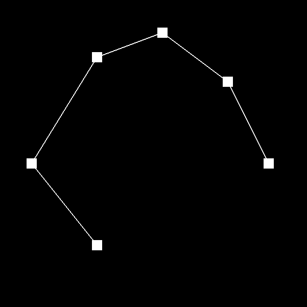 |
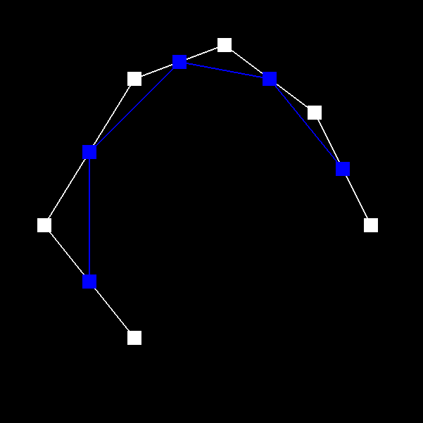 |
|
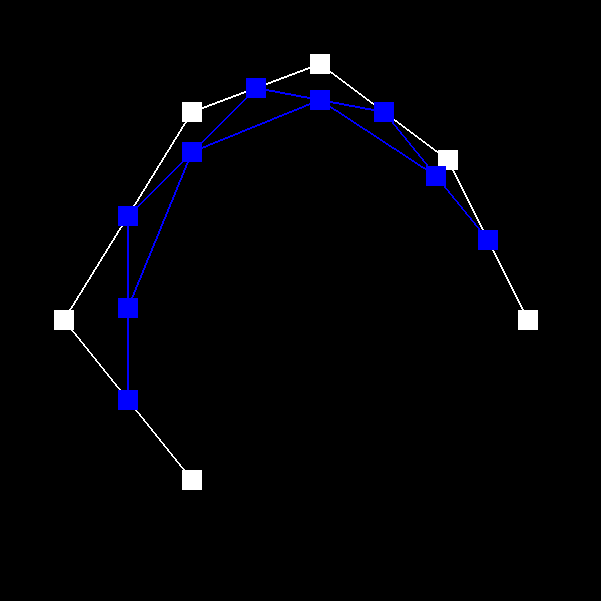 |
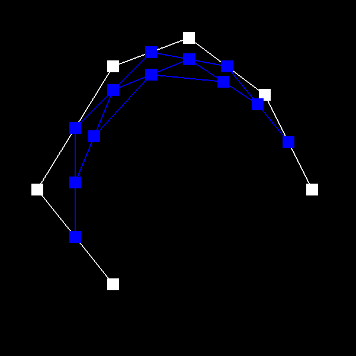 |
|
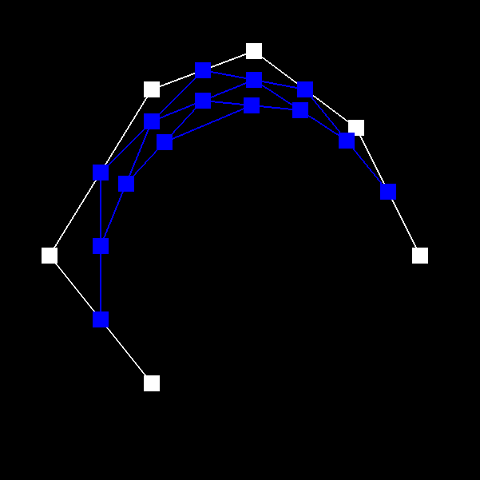 |
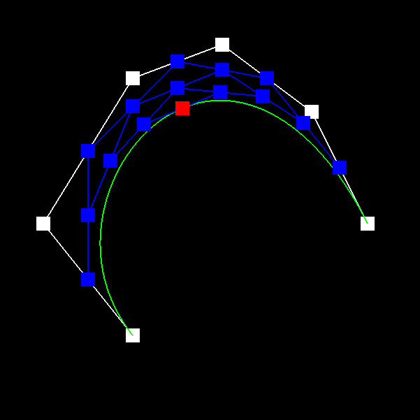 C). |
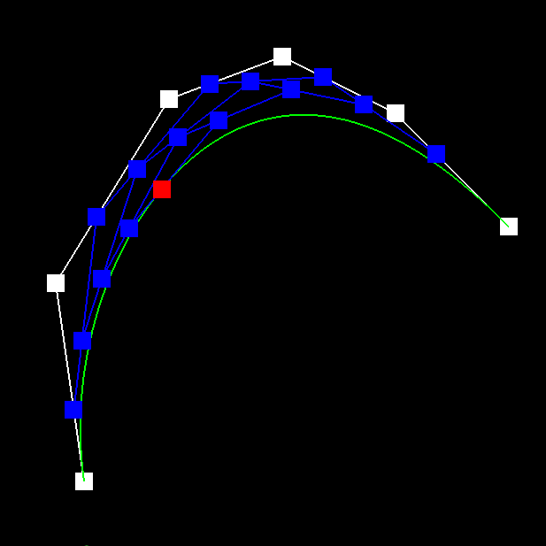
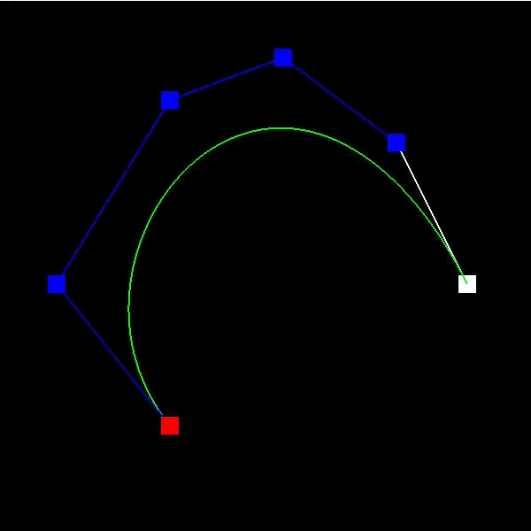
A Bezier patch is defined by a grid of control points. Each row of that grid is itself a 1D Bezier curve, so the surface can be evaluated by running 1D de Casteljau twice: once across each row in \(u\), and once across the resulting points in \(v\). The interpolation itself is unchanged from the previously defined implementation - only the dimension of the points (3D instead of 2D) differs.
BezierPatch::evaluateStep: conducts one interpolation level on 3D points, the same structure as before.evaluate1D: repeatedly applies evaluateStep until one point remains, and returns it.evaluate(u, v): evaluates every row at \(u\), collecting one point per row, then evaluates that column of points at \(v\).Because this is a tensor-product surface, evaluating in \(u\) then \(v\) gives the same point as \(v\) then \(u\); I used the row-first order for clarity.
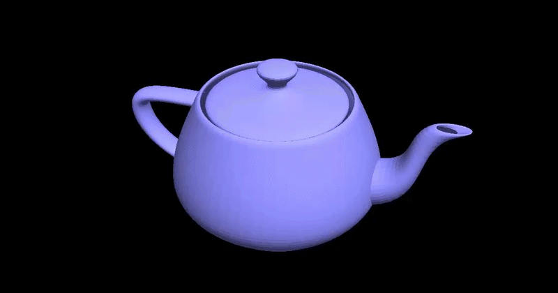
bez/teapot.bez evaluated with my implementation.
Vertex::normal() walks the ring of faces around a vertex, starting from its halfedge and stepping with
h = h->twin()->next() until it returns to the start. For each adjacent face that is not a boundary face,
it adds the cross product of the two edges leaving the vertex:
\[
\mathbf{n} \mathrel{+}= (p_1 - p_0) \times (p_2 - p_0).
\]
The magnitude of this cross product is twice the triangle's area, so larger faces automatically contribute more to the sum.
The total is then normalized to a unit vector (with a guard for a zero-length sum).
These per-vertex normals are what Phong shading interpolates across each triangle, which is why the surface looks smooth instead of faceted.
|
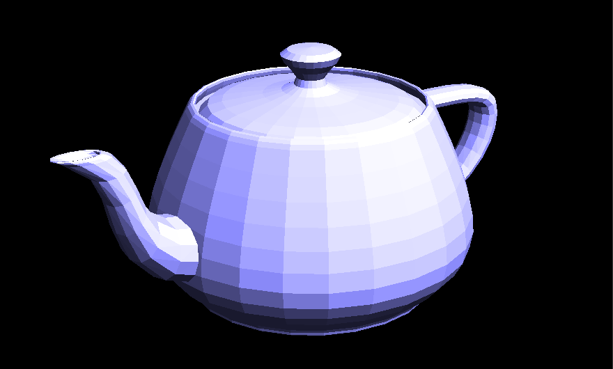 |
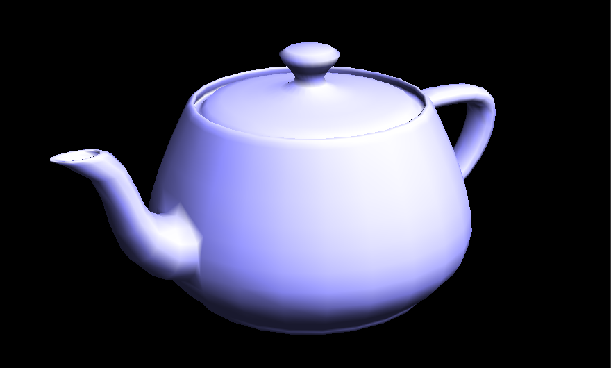 Q). |
Flipping replaces the shared edge of two triangles with the edge between their two opposite vertices. For triangles \((a,b,c)\) and \((c,b,d)\) sharing edge \((b,c)\), the flip produces \((a,d,c)\) and \((a,b,d)\).
|
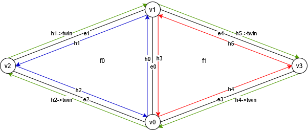 |
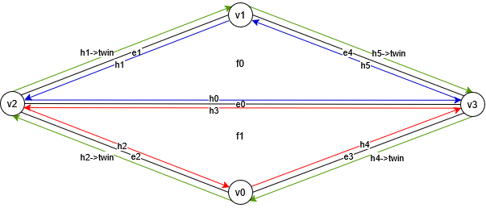 e0). |
flipEdge first returns early if the edge (or either adjacent face) is on the boundary, since there is no second triangle to flip into.
It then stores every element in the local neighborhood as a named temporary: the 6 halfedges, 4 vertices, 5 edges, and 2 faces.
With everything named, I reassign next, twin, vertex, edge, and face
for each halfedge using setNeighbors, then update the representative halfedge for each vertex, edge, and face.
No elements are created or deleted - the flip is simply a rewiring of existing relationships.
Naming every iterator up front was far easier to follow than chains like h->next()->twin()->vertex().
I also drew the two-triangle neighborhood on paper with every halfedge labeled before writing any code, and wrote the new face cycles as comments above the rewiring.
|
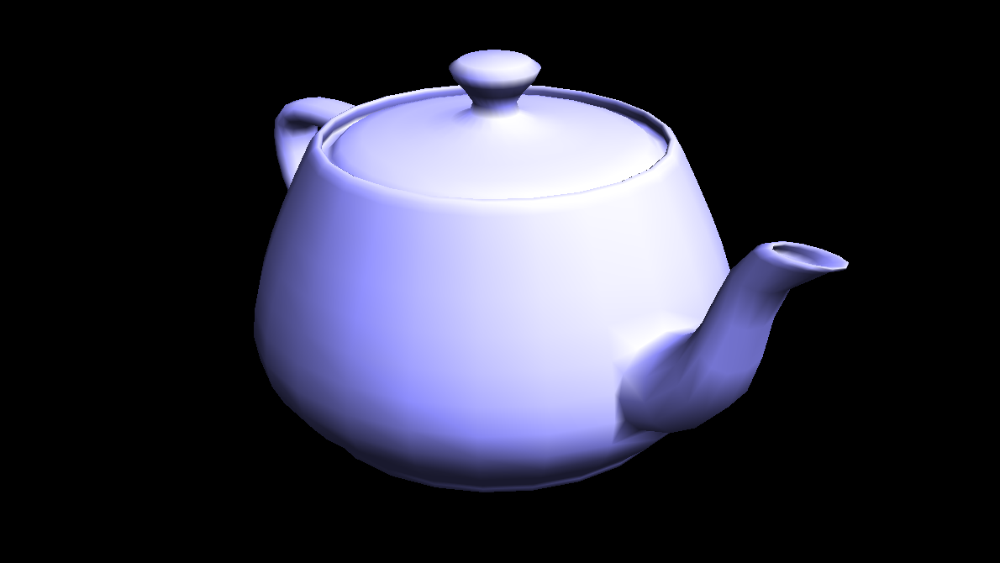 |
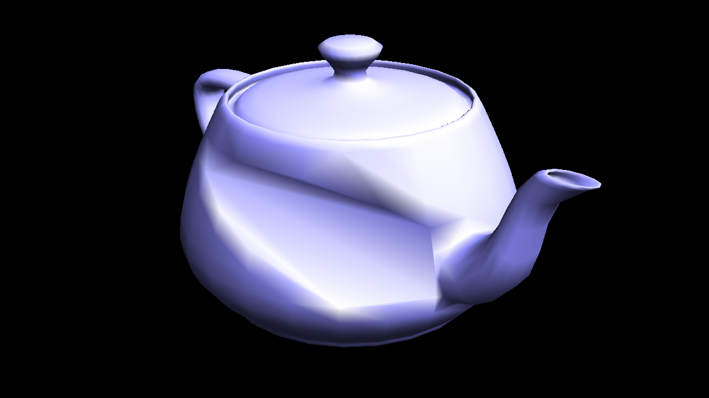 |
My first bug was stale ownership pointers: after rewiring, a face or vertex could still point at a halfedge that was no longer in its cycle. Switching to a strict order (set every halfedge's neighbors first, then update every owner pointer) resolved it. When something looked wrong, I checked three primary aspects: every face cycle has length 3, every twin pair points back at itself, and every vertex's halfedge starts at that vertex.
Splitting inserts a new vertex at the midpoint of an edge and connects it to the opposite vertex of each adjacent triangle, meaning we will need to actually generate new components.
While splitting, I also set isNew flags: the midpoint vertex and the two spokes are marked new, while the two halves of the original edge are not.
Part 6 relies on these flags to decide which edges to flip.
I treated the interior and boundary cases as two separate diagrams and checked each local face cycle immediately after rewiring it.
I reused the naming approach from Part 4 (h0–h11, v0–v3, vm) so the code matched the diagram one-to-one.
|
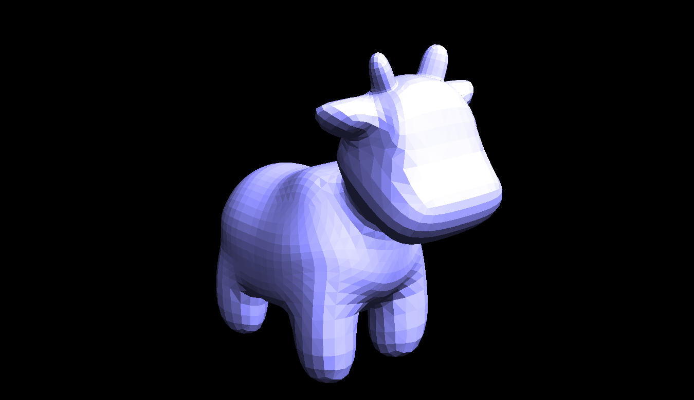 |
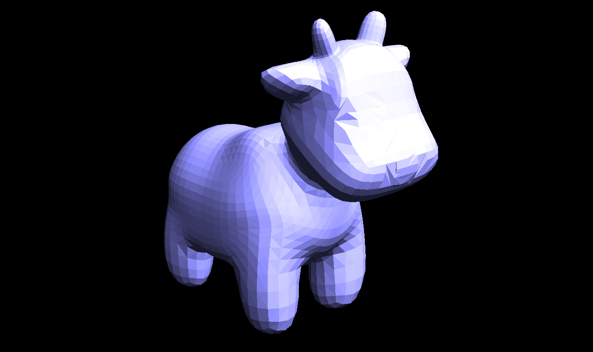 |
To isolate the effect of edge split alone, I compared a torus ring before and after applying multiple split operations, without any flips. After splitting, the upsampled mesh appears to express a higher 'twisting' effect due to the increased number of angled edges around the ring.
|
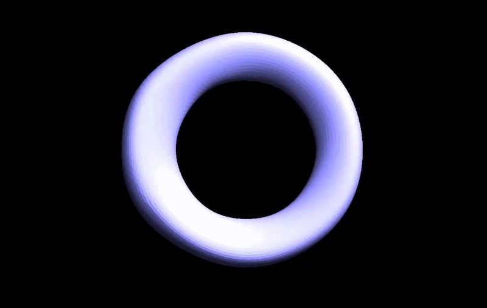 |
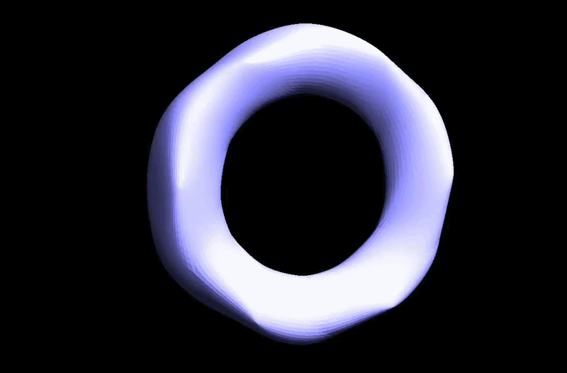 |
The trickiest part was the boundary case. To reconnect the boundary loop, I needed the boundary halfedge that comes before the split edge,
but this half-edge structure has no prev pointer. I resolved this by walking forward around the boundary loop until I found the halfedge whose
next() was the split edge's boundary halfedge, then redirecting it into the new boundary pieces.
|
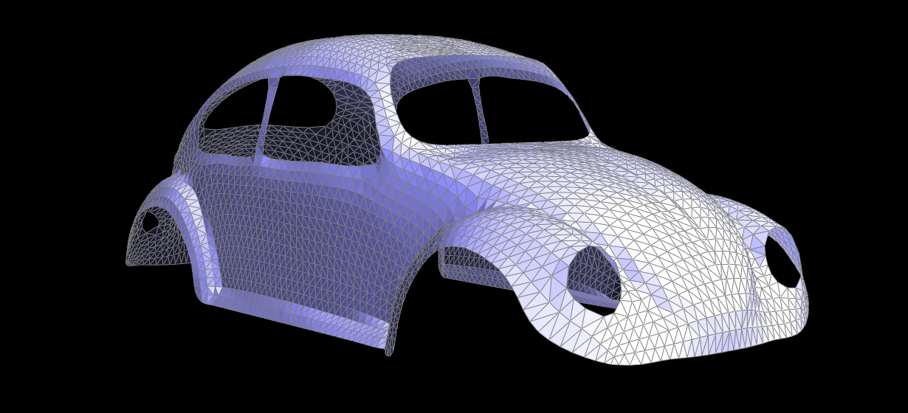 |
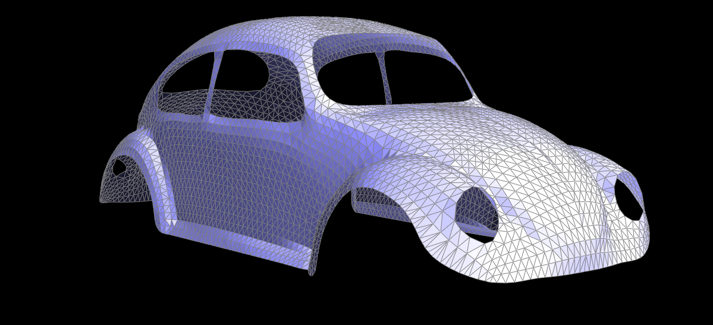 |
Loop subdivision splits every triangle into four and then repositions all vertices with weighted neighbor averages. I implemented it in five passes:
newPosition is copied into position.All positions are computed from the original mesh before any topology changes, and only committed at the very end. This keeps the result independent of iteration order and means a wrong position and a wrong rewiring show up as different, easier-to-identify symptoms.
Each square face of dae/cube.dae is made of two triangles sharing one diagonal, and that diagonal runs in only one direction across the face.
As a result, the cube's corners do not all have the same degree: a corner touched by several diagonals has more neighbors than one touched by few.
Loop subdivision's weights depend on vertex degree, so corners with different degrees are pulled by different amounts, and repeated iterations make the lopsidedness visible.
To pre-process the cube, I split the diagonal edge of every face. This adds a vertex at the center of each face and turns each face into four triangles fanned symmetrically around it. Every face center then has degree 4, and every cube corner has degree 3 and every face edge has degree 6. With identical connectivity at every corner and every face, subdivision treats them all the same way and the result stays symmetric.
|
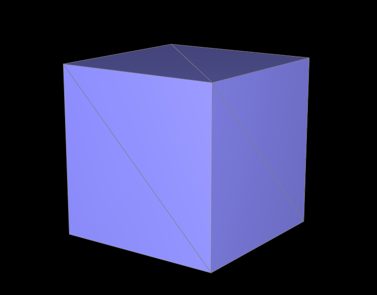 |
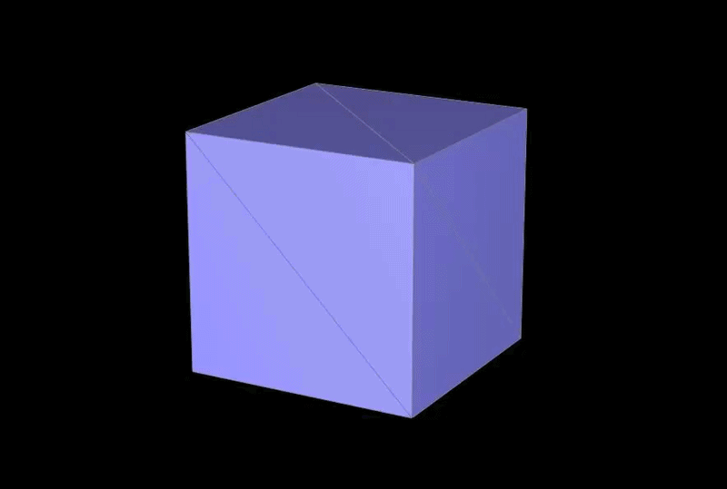 |
|
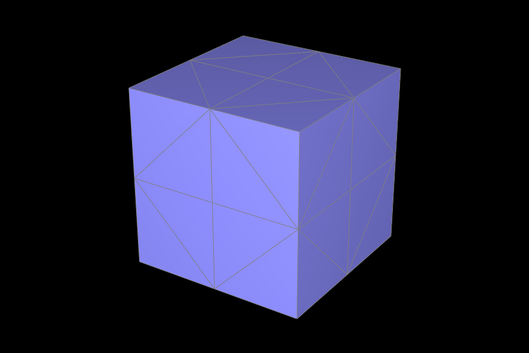 |
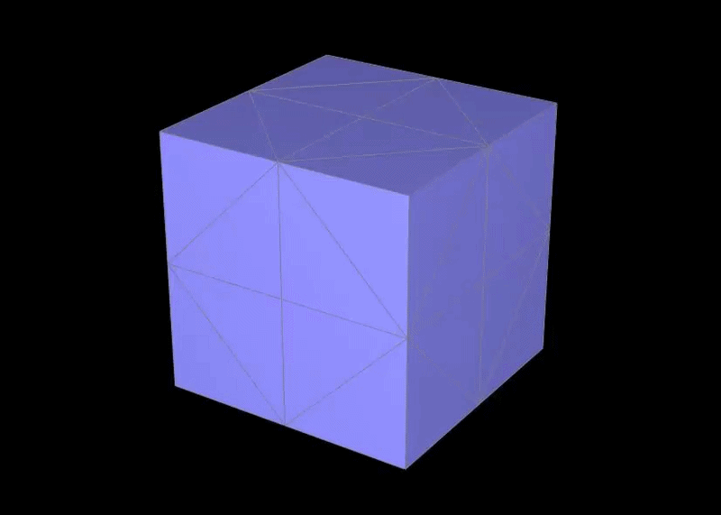 |
Since every vertex is pulled toward an average of its neighbors, repeated subdivision rounds off sharp corners and creases and tends to shrink the mesh.
On the original dae/cube.dae, a corner's nearest neighbors are a full face away, so the corners are pulled in a long way and the cube collapses toward a blob.
Pre-splitting edges places extra vertices closer to the corners and edges, so each feature is averaged over a smaller neighborhood. Below, I pre-split the cube in MeshEdit, adding vertices at the midpoints of the cube edges and inside each face. After subdivision the result is clearly still a cube rather than a blob, but the corners and edges remain broadly rounded. Because a split always places its vertex at an edge's midpoint, the closest new vertices still sit a sizeable fraction of a face away from each cube edge, and that distance sets how wide the rounded band ends up.
|
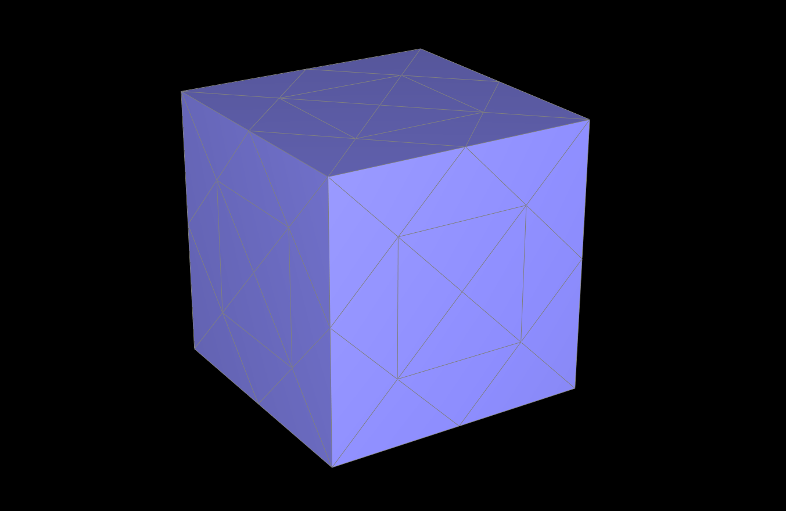 |
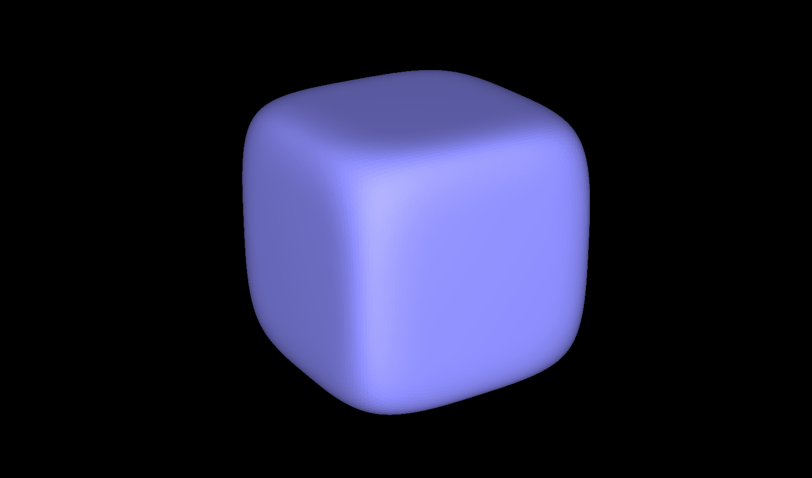 |
To push this further, I enlisted AI to help edit the cube's base geometry directly instead of building it from splits and flips.
Each face of cube.dae is divided into a 3×3 grid whose grid lines sit just inside the cube edges, and each grid cell is fanned into four triangles around its center vertex.
This gives every face small, dense cells at its four corners, thin strips running along its four edges, and one large cell in the middle.
This resulting mesh requires a custom base geometry, because simply splitting/flipping the original geometry cannot place a vertex this close to a cube edge without first creating vertices at the edge's midpoint and the other halfway points along it. With a ring of vertices only a short distance inside every edge, Loop's averaging at an edge or corner vertex reaches only across that thin strip. The rounding is confined to a narrow band, so the subdivided mesh keeps crisp edges and corners and holds the cube's original size. Every face, edge, and corner also has the same connectivity, so the cube subdivides symmetrically. The trade-off is a heavier base mesh (216 triangles instead of 12) with long, thin triangles along the edges.
|
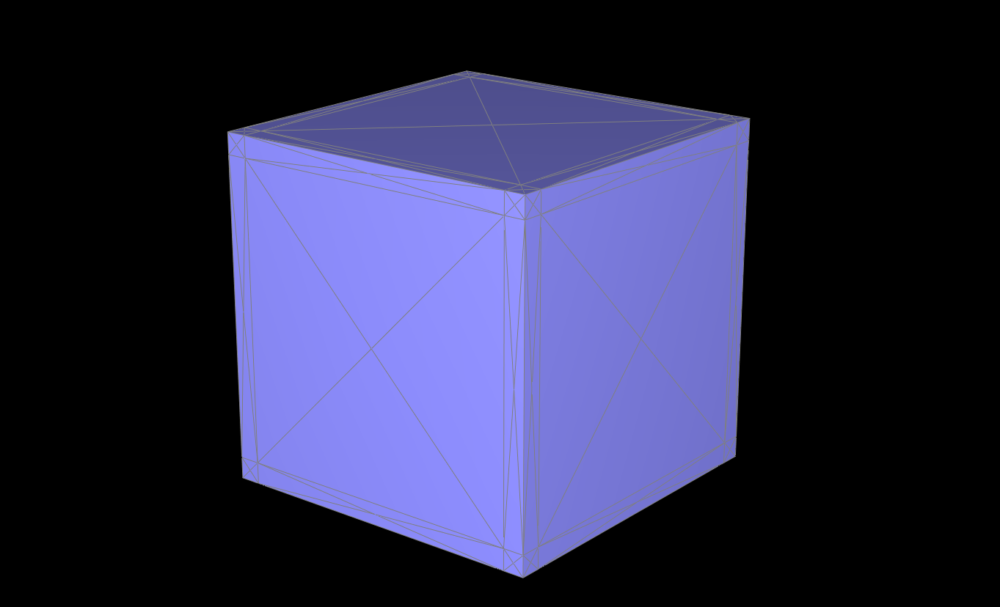 |
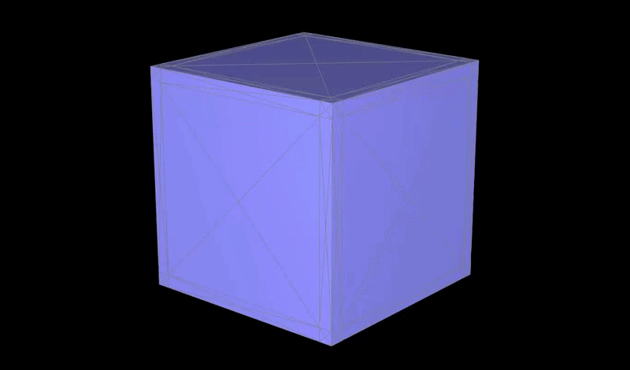 |